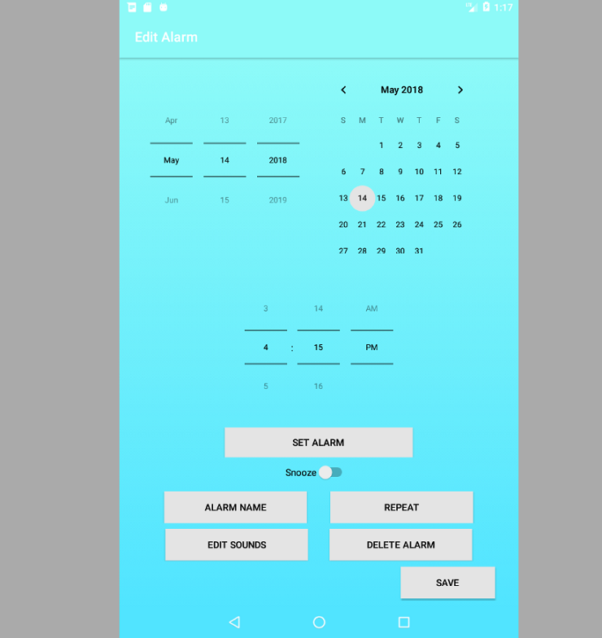

This MBTA tracker
tracks in real-time where all the subways are currently located. Every five seconds, the tracker
uses the MBTA's APIs to get the coordinates
of each subway to plot on a map that I drew.
I created this tracker for fun after being inspired by this
LED tracker
that tracks only part of the system. I wanted to create a version that tracked the entire system
and make it geographically accurate too since I believe it would be a good way to judge how far a
subway is from a certain stop. The code to this project can be found
here.
Spreadsheets
One of the projects that I did in my Object-Oriented Design class was creating a spreadsheet program.
We worked on this project in pairs. The spreadsheet program that my partner and I created can handle
data types, such as booleans, numbers, strings, references, and functions. The functions that are
currently supported include addition, multipulcation, comparing if a number is less than another
number, and concatenation. The program also performs error checking to reject cyclic references
or misformed expressions. There are also other features, such as saving a file, loading a file,
graphing data, and more. At the instructor's request, the code for this project has been made private.
If you would like to see the code, please send me an email at
ng.d@husky.neu.edu.
Pyramid Solitaire
A second project that I did in my Object-Oriented Design class was creating a version of Pyramid
Solitaire. The version I created supports three different modes: normal, relaxed, and tripeaks.
Normal mode consists of regular pyramid solitaire. Relaxed mode consists of a simple rule change
that makes gameplay easier. Tripeaks mode consists of a board with three pyramids instead of one.
The game is played through the terminal. To the right is a screenshot of the game in tripeaks mode.
The code for this project is currently private, at the instructor's request. If you would like to
see the code, please send me an email at
ng.d@husky.neu.edu.
Game of Life
For an assignment in my System Programming Concepts class in high school, I created John Conway's
Game of Life. In Conway's game, a board is initially filled with cells, which are either occupied
by an organism or empty. New generations are made under the following rules: An organism dies if
it is surrounded by 0 or 1 organisms, or 4-8 organisms. An organism survives if it is surrounded
by 2 or 3 organisms. An organism is born if the cell is empty, and it is surrounded by exactly 3
organisms. In my program, the game ends if there are no more organisms, there is a cycle in the
generations, or if maximum number of generations is reached. The code to this project can be found
here.
Game of MAMS
The Game of MAMS is a parody of the Game
of Life (the boardgame, not John Conway's version). Instead of filling the spaces with life events,
I filled it with events which students at my high school, The Massachusetts Academy of Math and
Science at WPI (MAMS), may experience during their two years there. At the request of my former
Spanish teacher to use for the language curriculum, I translated the game into Spanish, and my friend
translated it into French.
I created the game as a part of my Senior Independent Study Project (SISP) during high school. At my
high school, everyone had to do a SISP, which is a project where everyone got to learn about any topic
they wanted independently for 100 hours during the course of senior year. I learned HTML and CSS in
eighth grade, but I never had time to learn JavaScript, so I decided that this would be the perfect
time to do so. The code to this project can be found here.
Piano Website
One of my favorite things to do is to play piano. I have been playing piano since August 2007. Before
I left for college, my piano teacher wanted some recordings of me to remember me and to use as an
example for other students. My piano teacher is not the most tech-savy person in the world, so the best
way for me to get her all the videos was to compile them on a
website and give her the link. The request
also came while I was doing SISP, so I was able to incoporate some JavaScript in the website.
The site is organized by composer. Each composer's page has pieces that I have played in the past. For
each piece, I included examples from YouTube that either I or my piano teacher thought were good. If I
had a recording of me playing the piece, I also included that recording as well. The code to this project
can be found here.
High School Personal Website
During the beginning of junior year, my computer science teacher had everyone make a website that would
act as a portfolio for school work throughout the year. The websites contained information about each
class and had some sample work. The links to the websites were also put on the school's website, so that
prospective students could gather more information about what my school was like.
The website that I created is the same in design
as the one you are looking at right now. In fact, after junior year was over, I continued maintaining my
site, and because this current site has changed so much content-wise from high school, I decided that the
high school and current versions should be separate projects. The code to this project can be found
here.
Wake Me Up! Alarm Clock

During junior year computer science class, my teacher put my class into groups to make an app. Our group
decided to make an alarm clock app. Unlike other alarm clock apps, the alarms in our app are highly
customizable. Instead of having only one sound go off in an alarm, our app allows the user to chain
multiple sounds together in one alarm, such as tones, voice recordings, or songs. By allowing sounds
to be chained with one another, an alarm could start off calmly for the first few minutes with the sound
of waves and gradually change to more jolting sounds, like death metal. The poster for the app that we
presented at a poster session at our school can be found here.
The code to this project can be found here.
Regeneration of Sodium Carbonate using Solar Energy
During junior year, I did a science fair project on carbon dioxide removal from the atmosphere. To
make carbon dioxide removal efficient, chemical cycles are used. A sorbent captures the carbon
dioxide from the atmosphere, and then when in a closed container, heat is added to the sorbent to
release the carbon dioxide to be stored. The sorbent can then be reused to capture more carbon
dioxide. The problem with these cycles is that a lot of energy is needed to heat the sorbent.
Instead of using non-renewable sources to provide this energy, I tried using just the power of the
sun and a giant Fresnel lens to gather this energy.
While I was able to get temperatures high enough to release carbon dioxide, the process took too
long to be successful. However, the project was done during a New England winter, which is not known
to be the warmest or plesant weather, so maybe conducting the project during the summer may have
yielded better results. The paper I wrote on this project can be found
here.